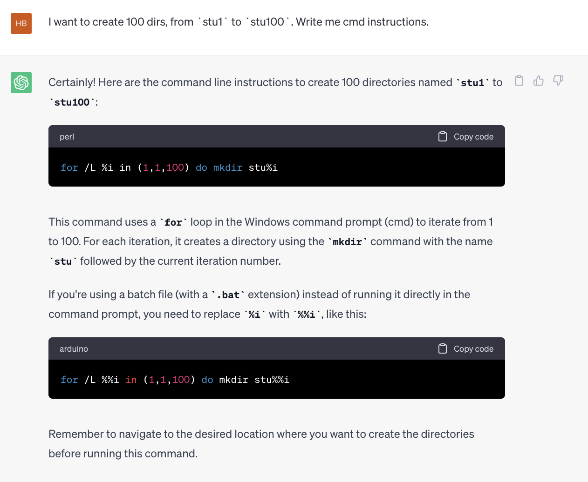
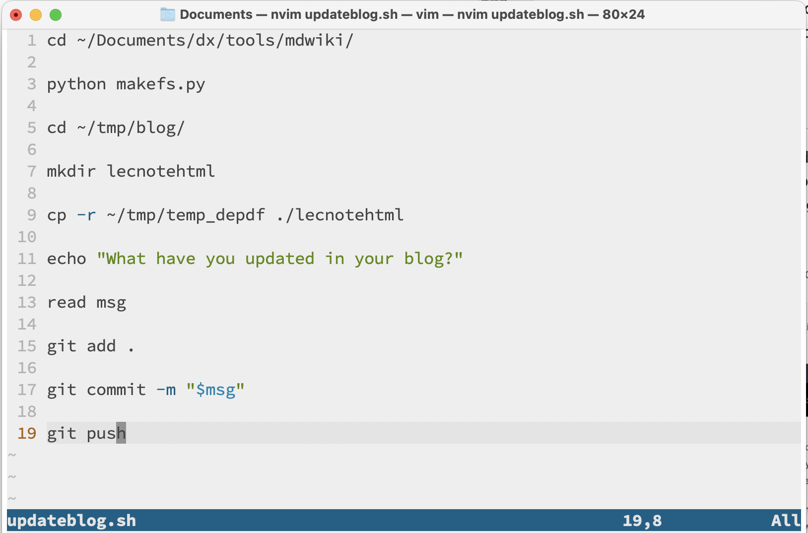

$$ \Huge \textbf{使用命令行} $$
$$ \boxed{ \overbrace{\textit{degaokaolization}}^{\small{去高考化}} \text{ Discussion Group | Topic 01}} $$
在当今世界，现代技术，尤其是计算机，赋予了我们实现不可思议的成就的能力。然而，我们注意到，尽管计算机功能强大，但有些学生却认为操作计算机只是 "机械的点点鼠标, 悄悄键盘就能完成的麻烦事"。当他们面对更复杂的挑战时，这种心态可能会给他们带来麻烦。
我们通常是通过鼠标和键盘来操作电脑的--在屏幕上拖动、点击所谓的 "窗口"，有时还会在其中输入一些内容。这就是所谓的 GUI 界面--GUI 是图形用户界面(Graphical User Interface)的缩写--屏幕上的一切都完美地呈现在你面前。当一个窗口出现时，一些可能的操作就会清晰地呈现在你面前。即使你以前没有看到这个窗口，也会立即清楚它的含义，并做出快速准确的反应。
这也表明，还有另一种不同的计算机操作方式。简而言之，就是纯粹打字。也就是说，在电脑上输入一些命令，然后让它们给出结果。这就是CLI 界面--CLI 是命令行界面(Command Line Interface)的缩写。
图形用户界面是 20 世纪 80 年代初的热门话题。有了图形用户界面，技术公司就可以轻松地向更多的客户推广自己的技术产品。只需点击一下按钮，就能将许多功能整合在一起，当然就能打入市场。
这就引出了一个奇怪的问题： 为什么命令行即使在今天也会存在, 而且丝毫没有要被取代的趋势？毕竟, 从直观上看，命令行的行为不直观, 令人困惑，看上去当然也不容易使用。
但这是真的吗？我们将在本专题中开始研究这个问题。
如果您使用的操作系统是 Linux 或 MacOS，也许 MIT 制作的 计算机教育中缺失的一课 更适合您观看和跟读。但如果您使用的是 Windows，请继续阅读。当你体会到命令行的甜头的时候, 自然就会选择它了.
命令行在 Windows 中仍然存在。事实上，在更高版本的 Windows 中，有两种命令行。在本节中，我们将介绍相对原始的命令行，即 CMD 程序。 另一个是Powershell, 比起cmd更加高级. 但是我们先不去探讨它了.
启动命令提示符的方法很简单：按下 WINDOWS+R 键，输入 cmd。然后会出现一个黑色窗口，上面写着
C:\Users\Admin\> _
这意味着您的当前工作目录位于C:\Users\Admin路径下。你所做的文件和更改将默认反映在此目录下。
要找到C:/Users/Admin是哪个文件夹, 就可以启动文件资源管理器(或我的电脑)，点击磁盘上的 C ，然后是 Users 文件夹，接着是 Admin 文件夹。您目前正在该目录下工作。
就像在文件资源管理器中一样，你很想知道如何这些东西里面转一转，也就是在这个里面导航。但在此之前，我们先来看看它是如何启动应用程序的。
首先，让我们在路径下运行一个程序。如果你没有合适的程序可以运行，我有一个名为 hello.exe 的程序，它可以在屏幕上打印 Hello World。 复制这个exe程序到你刚刚打开的文件夹, 输入
hello.exe
也许你会看到屏幕上显示 "Hello World"。如果你看到的是错误信息，那可能是你搞错了这个程序的位置。
但如果我想打开另一个文件夹中的应用程序呢？这就需要我们熟练掌握文件夹之间的导航。
更换文件夹(Change Directories). 使用 cd 在目录间导航。cd foldername 进入一个文件夹，cd .进入当前文件夹，cd ..返回上一级文件夹。此外，我们还可以 cd path/to/file/name/.../name，将它们组合在一起。
Getting Help(获取帮助). 命令行工具在设计的时候就考虑到了可以显示帮助。通过附加一个额外的 标志(flag) -h（Windows 7 及以后版本）或 /h（Windows XP），你将收到帮助信息。
现在在 cmd 中输入 calc.exe。我们当前的文件夹下面并没有calc.exe. 出乎意料的是，它居然启动了程序计算器。为什么呢？
答案就在 PATH 环境中。当你键入一行命令时，系统首先会搜寻该文件夹下的应用程序，然后开始在 PATH 文件夹中搜索。系统中有许多关键路径，如C:\Windows\System32，其中有大量应用程序。你可能会在这个文件夹中找到 calc.exe。
这基本上是一个偷懒的想法 - 把常用的东西聚集到一块时候, 我们不必在每次要执行文件时都更改目录，这个很省力!
这种设计的另一个好处是，我们可以给用户留下更多的选择。例如，一个用户可以把可执行文件 a.exe 安装到 C:/Program Files，而另一个用户则可以把它安装到 D:/Program Files。只要把环境变量PATH指向安装的位置, 我们的工具在运行的时候就不需要再变得和路径有关了.
不过，这种模式也有一些缺点。如果在 PATH 中包含两个名称完全相同的应用程序，有时候就会造成混乱。因此，在 Unix 系统中，不存在全局环境变量这种东西。相反，PATH 是一个窗口一个的。每次启动终端窗口时，PATH 都会设置为初始状态。它有一个配置 PATH 和其他东西的, 在启动的时候运行的脚本。
列出目录中的文件. 想知道当前目录下有什么？您可以输入 dir -s，其中 s 代表 show。
移动文件. 使用 move 命令。如果你想把文件从 C:\first 移到 D:\second, 你应该说 move C:\first D:\second。两个参数都可以是文件或目录。
还有其他一些命令也是这样操作的。如 copy、rename，而且根据 move 命令，不难猜出要输入什么。
提示。不要害怕出错。如果遇到错误，完全没关系。不要被错误吓到，甚至不知所措！事实上，出现错误是学习中的正常现象！
也许你曾梦想过在枯燥的课堂上关掉老师的电脑，这样他就没有幻灯片继续讲课了。
但是，直接冲上去关掉老师的电脑是有风险的。有没有可能实现一个定时关机呢?
是的！"shutdown "就可以做到这一点。输入 shutdown，你就会得到帮助信息。
此外，shutdown 命令甚至可以远程关闭计算机 - 当然是在本地网络中。其中还有帮助信息可以帮你做到这件事.
杀死进程(强制退出应用)就像点击窗口上的十字（x）按钮。但有些应用程序，如极域电子教室，不会为你提供关闭按钮。但我们仍然可以使用 taskkill 命令来强制退出程序。
通常，极域电子教室的名称是StudentMain.exe。你可以执行
taskkill /f /im StudentMain.exe
其中那些标志(flag)的意思是
/f 是强制退出(force quit)的意思/im 是按照名字搜索(searches by name)的意思.当启动一些有一些未响应的死循环的程序时，这条命令也很有用。我们将在下面的内容中看到一些例子。
为此，我们可以使用 echo 命令。例如： echo "Hello World"。
您可以执行 echo off 来不显示前面的提示文本 C:\Users\Admin，只留下闪烁的光标。这在批处理文件中非常有用。
也许你认为只显示文本是没什么大不了的。其实确实是这样的。但将文本写入文件就不那么简单了！我们应该怎么做呢? 其实很简单:
echo hello > a.txt
你的目录中就会出现一个 a.txt。好极了！但为什么会这样呢？
这种形式的程序基本上有两个与之相关的主要**"流"：输入流和输出**流--因为这很像算法的输入和输出--从输入端读入，向输出端写出。当程序尝试读取输入时，它会从输入流中读取，而当它打印某些内容时，它会打印到输出流中。
通常，程序的输入和输出都是在这个命令行界面的。也就是说，输入是键盘，输出是屏幕。不过，我们也可以重新连接这些流！
使用 >之后，我们把它的输出流（output stream, 简写为ostream）改成了文件 a.txt，因此它会在那里输出数据。
同样，我们有 < file 用于从文件中读入。你可以自己试试。
比方说，您想列出一个目录中的所有文件，然后在输出中搜索特定字符串。你可以这样做
首先，输入 dir 获取所有文件；其次，复制输出并使用 find 命令，同时粘贴之前复制的参数。
但这里还有一个想法--通过 pipe来连接输入和输出，也就是一个小竖条 |。事实上, 你可以这样做
dir | find "specific string"
即直接将 dir 程序的输出结果作为给 find 程序的输入。
好极了！现在，你已经对命令行有了基本的了解，最重要的是，你可以快速地自动处理事情了！
将这些指令保存在后缀为".cmd "的文件中，就可以点击运行了--通常情况下，你的杀毒软件会对此发出警告，因为恶意程序可能会用命令提示符来干一些很糟糕的事情，它们会对你的电脑造成严重损害。但有时这样做速度非常快，既省时又省力。
但如果我想创建 100 个目录，从 stu1 到 stu100，该怎么办？有没有循环控制什么的？当然有！您可以在搜索引擎中使用关键字 cmd loop 进行搜索！或者询问 ChatGPT 也是个不错的主意！

这是你学习的第一门语言。这将赋予你更好地组织计算机的能力。如果你准备使用像 Linux 这样的 Unix 系统，你会发现非常需要这些技术。
MacOS 就是一个类似 Unix 的系统，我的日常工作离不开 shell。例如，下面是更新你在阅读的网页笔记的 shell 脚本：

如果你是计算机科学（简称 CS）专业的学生，也许以后你会发现使用类似 Unix 的系统既有趣又高效。那么，现在正是观看麻省理工学院公开课的 计算机教育确实的一课的时候。
$$ -\mathscr {E}\text{nd of the note}- $$